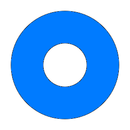
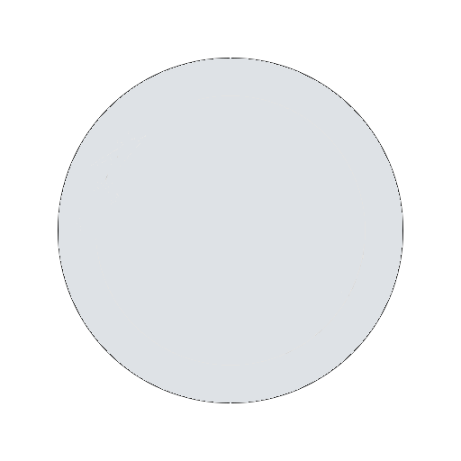

탈퇴하기
회원삭제는 프로필삭제와 다릅니다
회원 탈퇴 시 회원님의
계정 및 프로필, 모든 콘텐츠와 활동 기록, 포인트 충전 · 적립 · 사용 내역, 수익 내역, 스토어 주문내역이 삭제됩니다.
삭제된 정보는 어떤 경우에도 복구할 수 없으니 신중하게 결정해주세요.
단, 팀 채널에서 작성한 포스트는 삭제되지 않고 팀 채널 소유자에게 소유권이 이전됩니다.
포인트 충전을 통해 적립한 포인트는 회원 탈퇴 시 환불이 불가능합니다. 또한 환불 신청 후 환불 처리가 완료되기 전 탈퇴하는 경우 포인트 구매 기록을 확인할 수 없으므로 환불할 수 없습니다.
더불어 아직 정산하지 않았거나 자동 출금 신청하지 않은 수익 역시 회원 탈퇴 즉시 소멸되며 복구할 수 없습니다.
탈퇴하는 이유를 말씀해주세요. 제품 개선에 중요 자료로 활용하겠습니다.

기록 삭제 목적

이용이 불편하고 장애가 많아서
포인트가 비싸서
다른 사이트가 더 좋아서
삭제하고 싶은 내용이 있어서
사용빈도가 낮아서
콘텐츠 불만
기타
현재 비밀번호
비밀번호를 잊으셨나요?
비밀번호 재설정